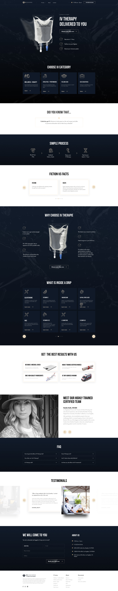

IVCONCIERGE
Целью проекта было создание лендинга для сервиса выездной Intravenous therapy. Услуга является премиальной и рассчитанна на клиента с высоким доходом, что и нужно было показать при выборе стиля. Дизайн выполнен в классической цветовой гамме: сине-черный с водным паттерном и золотой градиент.
